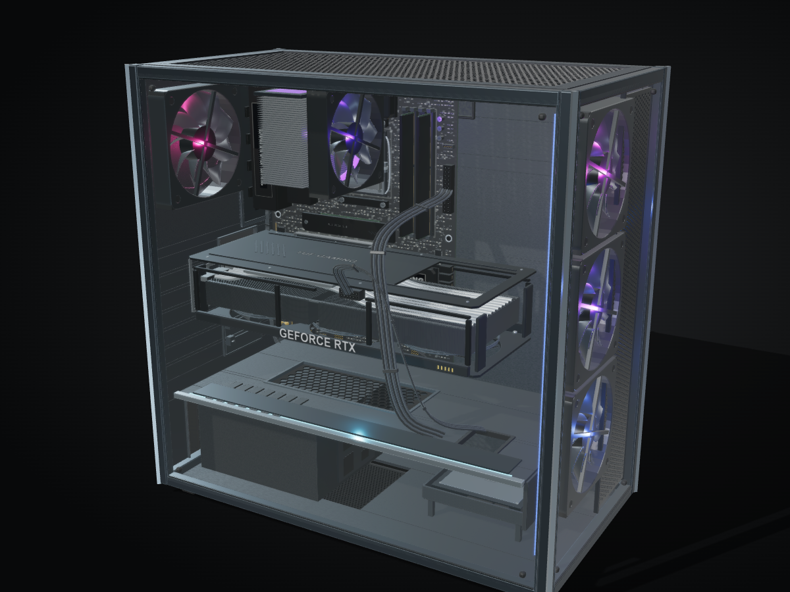

先看完整机器
在模型空白处拖动以旋转视角，滚轮缩放。使用相机按钮切换到预设角度。
从完整机箱一路进入主板、显卡和内存。旋转模型，拖动拆解进度，查看每个部件的用途，再深入探索芯片内部的逻辑结构。
开始探索 →
在模型空白处拖动以旋转视角，滚轮缩放。使用相机按钮切换到预设角度。
从 Assembly（装配）进入 Dissection（拆解），最后到 Inventory（零件清单）。Auto 可以自动播放。
鼠标左键点击可深入的部件。右键查看资料；触屏先点选，再使用 Take apart（拆开）按钮进入内部。
| 操作 | 作用 |
|---|---|
| 鼠标拖动 / 滚轮 | 旋转模型 / 缩放。拖动空白区域能避免误选部件。 |
| 左键 / 右键 | 左键进入可深入的部件；右键查看部件说明、规格和来源。 |
| 触屏点按 | 先显示资料卡，再通过 Take apart 进入。手机左上角的层级按钮展开系统菜单。 |
| Search / / | 搜索英文部件名称，例如 RTX、DDR5、VRM；选中结果可跳转到对应层级。 |
| Hide / Isolate / Focus | 隐藏所选部件 / 只显示所选部件 / 将相机对准所选部件。 |
| Airflow | 显示适用层级的气流方向；随着拆解进度增加，气流逐渐淡出。 |
| 面包屑 / Backspace | 回到上一层。浏览器返回键也可回到先前浏览的层级。 |
| Esc | 取消当前选择；对话框打开时用于关闭对话框。 |
| Reset | 恢复当前机器的装配和相机。切换笔记本后会恢复该笔记本。 |
浏览位置会保存在地址栏中。复制链接即可分享层级、部件及拆解进度；相机视角、隐藏部件与气流偏好不写入链接。
黑屏或渲染缓慢时，请确认浏览器支持 WebGL 并开启图形加速，参考英文图形加速设置说明。本地项目需通过开发或预览服务器访问，不能直接打开 HTML 文件。
物理模型表达部件形态和装配关系，芯片模型表达逻辑架构。示意结构不等于精确维修图或芯片制造版图。各部件来源和精度说明可在资料卡中查看。